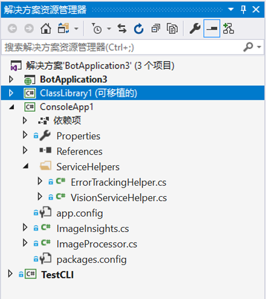

AI-100ZH-Design-Implement-Azure-AISol
实验验室 2 - 实现计算机视觉
简介
我们将构建一个端到端的应用程序，它允许你引入自己的图片，使用认知服务获取描述文字和一些关于图像的标记。在后面的实验室中，我们将使用 LUIS 构建一个 Bot Framework 机器人，以便轻松且有针对性地查询此类图像。
实验室 2.0：目标
在本实验室中，你将：
- 了解各种认知服务 API
- 了解如何配置应用以调用认知服务
- 构建一个在 .NET 应用程序中调用各种认知服务 API（尤其是计算机视觉）的应用程序
虽然重点是认知服务，但你还将使用 Visual Studio 2019。
注意： 如果你还没有帐户，请按照指示创建 Azure 帐户和认知服务，并在 Lab1-Technical_Requirements.md 中获取 API 密钥。
实验室 2.1：体系结构
我们将构建一个简单的 C# 应用程序，它允许你从本地驱动器中引入图片，然后调用计算机视觉 API 以分析图像并获取标记和描述。
在这个实验室的后续部分，我们将向你展示如何查询数据，以及构建 Bot Framework 机器人以进行查询。最后，我们将通过 LUIS 扩展这个机器人，以自动从查询中获取意图，并使用这些信息智能地指导搜索。

实验室 2.2：资源
主要 github 存储库文件夹中有一些目录：
-
sample_images：一些示例图像用于测试认知服务的实现。
-
code：在这里，有两个目录。每个文件夹都包含一个解决方案 (.sln)，其中包含实验室的多个不同项目。
-
Starter：一个入门项目，如果你想学习创建项目中使用的代码，可以使用该项目。
-
Finished：一个完成的项目，你将利用它来实现计算机视觉并使用本实验室中的图像。
-
实验室 2.3：图像处理
认知服务
认知服务可以用于为你的应用、网站和机器人引入算法，通过自然的交流方式来了解、听取、说出、理解和解释你的用户需求。
可用的认知服务有五个主要类别：
- 视觉：图像处理算法，用于识别、标注和调整图片
- 知识：映射复杂的信息和数据，以解决智能推荐和语义搜索等任务
- 语言：允许你的应用使用预构建脚本处理自然语言，评估情绪并学习如何识别用户想要的内容
- 语音：将音频转换为文本，使用语音进行验证，或将说话人识别添加到应用中
- 搜索：将必应搜索 API 添加到应用中，并利用该功能将数以亿计的网页、图像、视频和新闻整合到一个 API 调用中
可以浏览服务目录中的所有特定 API。
让我们通过回顾 Finished 项目中的示例代码来讨论如何在应用程序中调用认知服务。
图像处理库
-
打开 code/Finished/ImageProcessing.sln 解决方案
-
在
ImageProcessing解决方案中，可找到ProcessingLibrary项目。它可用作多种服务的包装器。这个特定的 PCL 包含一些用于访问计算机视觉 API 的帮助程序类（位于 ServiceHelpers 文件夹中）以及一个封装结果的“ImageInsights”类。
-
你应能够挑选该可移植类库并将其放入包含认知服务的其他项目（需进行某些修改，具体取决于要使用的认知服务）。
ProcessingLibrary：服务帮助程序
-
当你开发应用时，可以使用服务帮助程序简化操作。服务帮助程序的其中一个主要作用是能够检测 API 调用何时返回超过调用率的错误，并自动重试该调用（经过一些延迟之后）。它们还可帮助引入方法，处理异常以及处理密钥。
-
你可在智能 Kiosk 示例应用程序中找到适用于某些其他认知服务的其他服务帮助程序。利用这些资源，可以根据需要轻松添加和删除未来项目中的服务帮助程序。
ProcessingLibrary：“ImageInsights”类
-
在 ProcessingLibrary 项目中，导航到 ImageInsights.cs 文件。
-
你可以看到图像有
Caption和Tags属性以及唯一的ImageId。“ImageInsights”从计算机视觉 API 收集信息。 -
现在让我们退回一步。它不像创建“ImageInsights”类以及从服务帮助程序处复制某些方法/错误处理那么简单。我们仍需调用 API 并在某处处理图像。为完成本实验室，我们将逐步讲解
ImageProcessor.cs，以了解如何使用。在未来的项目中，可随意将此类添加到 PCL 并从那里开始（需对其进行更改，具体取决于正在调用的认知服务和正在处理的内容 - 图像、文本、语音等）。
实验室 2.4：查看 ImageProcessor.cs
-
导航到
ProcessingLibrary中的 ImageProcessor.cs。 -
注意类顶部的以下
using指令，它们位于命名空间上方：using System; using System.IO; using System.Linq; using System.Threading.Tasks; using Microsoft.ProjectOxford.Vision; using ServiceHelpers;Project Oxford 是在其中开始进行许多认知服务的项目。如你所见，NuGet 包甚至在标记在 Project Oxford 下。在这种情况下，我们将为计算机视觉 API 调用
Microsoft.ProjectOxford.Vision。此外，我们将引用服务帮助程序（请记住，这些将简化我们的操作）。你需要根据要在应用程序中利用的认知服务来引用不同的包。 -
在 ImageProcessor.cs 中，我们将从使用处理图像的方法
ProcessImageAsync开始。该代码将利用异步处理，因为它将利用服务来执行操作。public static async Task<ImageInsights> ProcessImageAsync(string imgPath, string imageId) { // Set up an array that we'll fill in over the course of the processor: VisualFeature[] DefaultVisualFeaturesList = new VisualFeature[] { VisualFeature.Tags, VisualFeature.Description }; // Call the Computer Vision service and store the results in imageAnalysisResult: var imageAnalysisResult = await VisionServiceHelper.AnalyzeImageAsync(imgPath, DefaultVisualFeaturesList); // Create an entry in ImageInsights: ImageInsights result = new ImageInsights { ImageId = imageId, Caption = imageAnalysisResult.Description.Captions[0].Text, Tags = imageAnalysisResult.Tags.Select(t => t.Name).ToArray() }; // Return results: return result; }在上述代码中，我们使用
Func<Task<Stream>>，因为我们要确保可以多次处理图像（为需要它的每项服务都处理一次），因此我们具有一个函数，可让我们回到获取流。由于获取流通常是异步操作，而不是函数返回流本身的操作，因它会返回一个允许我们以异步形式执行这个操作的任务。在
ImageProcessor.cs的ProcessImageAsync方法中，我们设置将在处理器运行期间填写的静态数组。如你所见，这些是我们想要为ImageInsights.cs调用的主要属性。 -
接下来，我们要调用认知服务（尤其是计算机视觉），并将结果放在
imageAnalysisResult中。 -
我们使用以下代码调用计算机视觉 API（借助
VisionServiceHelper.cs），并将结果存储在imageAnalysisResult中。在VisionServiceHelper.cs的底部附近，你希望查看用于调用（RunTaskWithAutoRetryOnQuotaLimitExceededError、DescribeAsync、AnalyzeImageAsync、RecognizeTextAsyncYou）的可用方法。你将使用 AnalyzeImageAsync 方法，以返回可视特征。var imageAnalysisResult = await VisionServiceHelper.AnalyzeImageAsync(imgPath, DefaultVisualFeaturesList);调用计算机视觉服务之后，我们想要在仅包含以下结果的“ImageInsights”中创建一个条目：ImageId、Caption 和 Tags（可通过重新访问
ImageInsights.cs进行确认）。 -
下面的代码完成了此任务。
ImageInsights result = new ImageInsights { ImageId = imageId, Caption = imageAnalysisResult.Description.Captions[0].Text, Tags = imageAnalysisResult.Tags.Select(t => t.Name).ToArray() };所以现在我们有了计算机视觉 API 所需的描述文字和标记，并且每个图像的结果（具有 imageId）都存储在“ImageInsights”中。
-
最后，我们需要通过在方法末尾使用以下行来关闭该方法：
return result; -
为了使用此应用程序，我们需要生成项目，为此请按 Ctrl-Shift-B，选择 “生成” 菜单，然后选择 “生成解决方案”。
-
与你的讲师一起修复任何错误。
浏览 Cosmos DB
Azure Cosmos DB 是 Microsoft 的可复原 NoSQL PaaS 解决方案，对于存储结构松散的数据（如我们具有的包含图像元数据结果的数据）非常有用。还有其他选择（Azure 表存储、SQL Server），但 Cosmos DB 使我们可以灵活地自由发展架构（比如为新服务添加数据）、轻松查询，并且可以快速集成到 Azure 认知搜索（我们将在之后的实验室中进行这个操作）。
实验室 2.5（可选）：了解 CosmosDBHelper
Cosmos DB 不是这个实验室的重点，但如果你对将要进行的操作感兴趣，这里有一些我们将使用的代码的重点：
-
导航到
ImageStorageLibrary项目中的CosmosDBHelper.cs类。查看代码和注释。使用的许多实现都可在入门指南中找到。 -
转到
TestCLI项目的Util.cs文件并查看ImageMetadata类（代码和注释）。在这里，我们会将从认知服务中检索的ImageInsights转换为要存储到 Cosmos DB 的相应元数据。-
最后，查看
TestCLI和ProcessDirectoryAsync中的Program.cs。首先，我们要检查是否已上传图像和元数据 - 可以使用CosmosDBHelper按 ID 查找文档，如果文档不存在，则返回null。接下来，如果我们设置了forceUpdate或之前未处理图像，则将使用ProcessingLibrary中的ImageProcessor调用认知服务，并检索添加到当前ImageMetadata的ImageInsights。 -
完成所有这些操作后，我们首先可以使用
BlobStorageHelper实例将实际图像存储到 Blob 存储中，然后使用CosmosDBHelper实例将ImageMetadata存储到 Cosmos DB 中。如果文档已经存在（基于我们上一次检查），则应更新现有文档。如果不存在，我们应该创建一个新文档。
-
实验室 2.6：使用 TestCLI 加载图像
我们将实现主要的处理和存储代码作为命令行/控制台应用程序，因为这使你可以专注于处理代码，而无需担心事件循环、窗体或任何其他用户体验相关干扰。之后可随意添加自己的用户体验。
- 在 TestCLI 项目中，打开 settings.json 文件
-
从 Lab1-Technical_Requirements.md 添加特定的环境设置
注意：对于牛津项目 API，认知服务的 URL 应以** /vision/v1.0** 结尾。 例如
ENDPOINT/vision/v1.0。 在创建的认知服务的“资源管理”、“密钥和终结点”边栏选项卡中可以找到 ENDPOINT URL - 如果尚未这样做，请生成项目
-
打开命令提示符，并导航到 TestCLI 项目的生成目录。 该生成目录类似于 {GitHubDir}\Lab2-Implement_Computer_Vision\code\Finished\TestCLI。
备注：请勿导航到调试目录 备注：.net core 3.1 是必需的，可在 https://dotnet.microsoft.com/download/dotnet-core/3.1 中查找到相应安装程序
-
运行命令 dotnet run
Usage: [options] Options: -force Use to force update even if file has already been added. -settings The settings file (optional, will use embedded resource settings.json if not set) -process The directory to process -query The query to run -? | -h | --help Show help information -
默认情况下，它会从
settings.json中加载你的设置（它会将其构建到.exe），但你可以使用-settings标记提供你自己的设置。要将图像（及其来自认知服务的元数据）加载到你的云存储中，你只需要求 TestCLI__-process图像目录，如下所示：dotnet run -process "<%GitHubDir%>\AI-100-Design-Implement-Azure-AISol\Lab2-Implement_Computer_Vision\sample_images"备注：将 <%GitHubDir%> 值替换为在其中克隆存储库的文件夹。 完成处理后，可直接使用 TestCLI__ 查询 Cosmos DB，如下所示：
dotnet run -query "select * from images" -
花一些时间查看示例图像（可在 /sample_images 中找到它们），并将图像与应用程序中的结果进行比较。
备注：还可以在 Azure 的 CosmosDb 资源中浏览结果。 打开资源，然后选择“数据资源管理器”。 展开“元数据”数据库，然后选择“项目”节点。 你将看到多个包含结果的 json 文档。
学分
这个实验室按这个认知服务教程进行了修改。